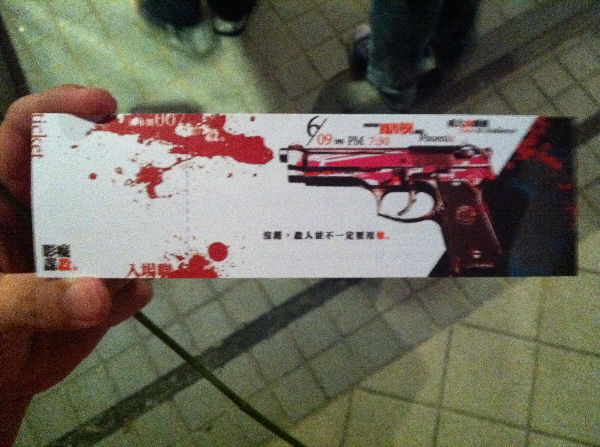

噢天啊，我真的跑去看第二次了。
面劇團這次首演，事實上有兩場，昨天跟今天各一場。昨天(其實是今天凌晨)很努力的把心得給寫下來，心中的感動還是一直在那。今天晚上也有空，就去排隊囉~!! 話說，昨天跟今天都一樣，因為愚蠢的意外，我沒有事先線上索票(嗚嗚~昨天晚上要索今天的票也早已經滿了…)，所以只能去無票候補區排隊。今天去得晚了點，昨天是第三個，今天是第….十幾個左右吧。排隊的時候突然發現，有些人手上拿著一朵花，我心想，哇喔應該是粉絲團吧！沒幾分鐘，天使似乎聽到了我的呼喚(?)，有工作人員拿了朵花給我，說謝幕的時候要獻花的。嘿，那朵是玫瑰耶！真害羞>////<
在隊伍中等候的同時，我除了邊壓抑著很想興奮地告訴旁邊的陌生人這場表演有多好看的衝動以外，同時還保持相機standby的狀態。因為有了昨天的經驗，我知道如果我想拍到入場票的全貌的話，就只有在我拿到它，一直到我走到剪票人員的這幾十秒的時間！唉，因為是候補的，所以票會在入場前一刻才發放…..:( 把握這幾十秒的時間，我終於拍到完整的票了！

其實昨天就發現一個很有趣的地方，票的角落寫著「流水號007」，昨天就在懷疑，到底是我運氣好到爆炸，候補也可以候補到007號這麼有意義的票，或是這是故意設計的呢？今天就馬上找到答案了….每一張都是007 :P
今天運氣跟昨天差不多好，今天坐到第六排正中間的位置！其實只是因為這個位置比較難走進去(很窄)，而且又只有一個空位，所以讓我搶到！這位置的角度跟高度都很棒，唯一可惜的就是前面那個人太高了= =….或是頭太大，反正就是會擋到我，可惡。
又一次的暗幕，又一次的演出。
第二次的欣賞，讓我發現一些很有趣的地方。首先是劇情前後的呼應，除了昨天說到的道具以外，其實也有很多台詞是前後連貫呼應的。我最驚訝的一句是，傻傻的小張跟他心愛的小萍在pub裡第一次出現的時候，聊天過程中他其實就有講到一句「…..真他媽的xxx」這樣的話。一直到接近尾聲的地方….接到小萍說他不喜歡一點髒話都不罵的男人，雖然那個「哇操~」總是可以讓全場觀眾爆笑，但是這小小的伏筆應該要看第二次才會發現呢！:D
再來，大概就是今天的突發狀況少了很多…像是吳思華生氣拍pub櫃檯桌子的時候，搖搖杯沒有倒下來，還有小萍寫白板的板擦沒有掉下來，這兩個突發狀況，說真的，對昨天那場表演有畫龍點睛的效果！另外，白板筆是真的沒水我知道XDDDD 還好有找到有水的筆…..
嗯….我想還有一個讓我很懊惱的地方，就是今天的觀眾好會笑…..害我都聽不清楚全部的台詞啦>"<
還是要講一下關於演員的部份。今天我發現神探跟Vincent的表現更亮眼了！神探的喜感更加活靈活現了，Vincent的同性戀味道更自然了，真的很棒！說到這個，害我想到那個神探外遇的部份啊…..感覺不是很明確耶，有點讓人一頭霧水的說。不過那個「想你唷」好甜喔~不知道神探心裡在想著誰。:P
其他人的話…..Coco跟小萍今天好像有一點點卡詞，但是其實看不太出來。Coco在這兩天的第一幕都有點緊張，是真的緊張還是他故意要演裝出來的緊張勒~? 萬一是演的那還真的是有夠像耶XDDDDD 太厲害了真的！吳思華的動作細節，昨天根本沒有注意到，今天仔細一看才發現，他真的演得很好！對女生的那個眼神，略帶勾引還有幻想的眼神，如果有注意到的話，真的就能夠直接知道他演的是一個變態了！最後是小張，他的那股傻勁還是非常生動，不過今天才突然發現，其實演小張這個，本人好像還滿帥的！不是英俊瀟灑那種，但是就是滿帥的這樣！
謝幕啊……謝幕我還是一樣不停的鼓掌耶，好像鼓掌鼓到手傷好一半了，哈。
在衝上台送花的人群中，我也緩慢的向舞台移動，發現好像有滿多親友團來支持的，演員們都在跟朋友聊天。後來我鼓起勇氣去把花獻給小萍>///<，這麼巧旁邊跟他聊天的是之前認識的老師，就請老師幫我們拍個照！噢對了，這時候旁邊殺出一個人….他送花束！花束耶！拿著一朵玫瑰花的我輸了….||| 哎呀這只是個小插曲啦。接著我去找小張拍照，我沒有花了，也不打算送花，男生送男生一朵玫瑰花很奇怪耶…..我只跟他說「我很喜歡你的角色，」(講到這裡他還一臉茫然)「可以跟你拍張照嗎？」啊哈~然後我就沒跟其他人拍照了。後來有點後悔，應該去找神探拍個照的，他好頑皮好好玩喔XD
呼~所有的工作人員們都辛苦了！整個表演的設計都很棒，也看得出來很用心。我很喜歡。第一次這麼認真看話劇舞台劇的CrBoy覺得很開心！:D:D:D:D:D:D:D
又是碎碎念：
- 我今天突然想到，我不穿皮衣，也不穿白襪子，偶爾也會罵一點髒話唷！XD
- 分享一下我的票，嘿嘿~
- 對了！昨天就一直覺得小萍有某種感覺…..今天想到了，原來是很像徐佳瑩！我不是說長相喔！是說氣質！氣質！
- 啊啊啊啊啊！差點就忘記這個！這個一定要說才行！第二天的小冊子多了一張小小的紙條….一看，原來是勘誤啊！
這實在太有梗了啦XDDDDDDDDDDDD 笑死我了~~~ - 對了，我好像一直都忘記說，看了他們的表演害我好後悔以前沒去修表演藝術概論喔T___________T
Last modified on 2011-06-10